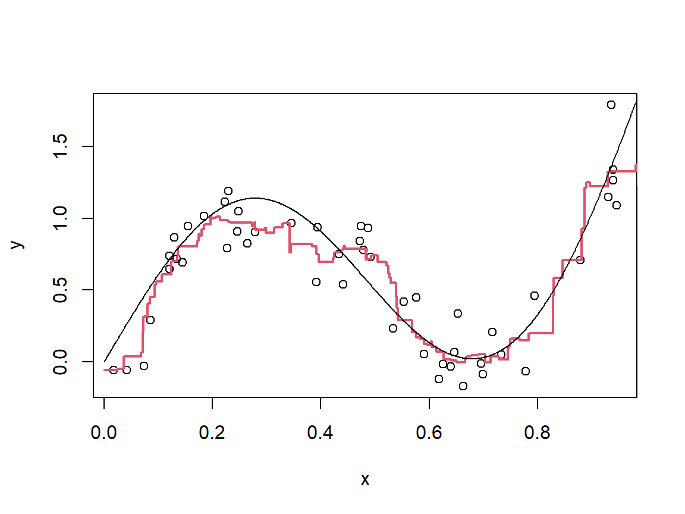

8 Nonlinearity Part I
\[ \def\hbeta{\hat \beta} \def\R{\mathbb{R}} \def\I{\mathbf{I}} \def\x{\mathbf{x}} \def\Rr{\mathbb{R}} \newcommand{\argmin}{\mathop{\rm argmin}} \newcommand{\argmax}{\mathop{\rm argmax}} \def\F{\mathcal{F}} \def\hbbeta{\hat{\boldsymbol{\beta}}} \def\bbeta{\boldsymbol{\beta}} \def\X{\mathbf{X}} \def\y{\mathbf{y}} \def\hg{\hat g} \def\a{\mathbf{a}} \def\K{\mathbf{K}} \def\B{\mathbf{B}} \def\b{\mathbf{b}} \def\w{\mathbf{w}} \]
In the last two chapters we looked in reasonable depth at linear and generalised linear models, in which the relationships between \(Y\) and \(X = (X_1, X_2, ..., X_p)\) are characterised only by a vector of regression coefficients, which concisely capture how changes in the predictors correspond to changes in the expectation of the response (possibly via a link function).
This simple structure makes linear and generalised linear models highly interpretable, and their statistical properties well understood. However, many modern applications involve situations where far more flexibility is needed in order to accurately capture the relationships between \(Y\) and \(X\). In Chapters 4 and 5 we encountered a simple illustrative example approach by which non-linearity can be introduced in a principled manner, by means of polynomials.
8.1 Basis Expansions
The polynomials we saw previously are an example of a basis expansion. In linear algebra we can think of a basis for a vector space as a set of vectors, say \(\mathcal{B}\), with the property that every element of the vector space can be expressed as a linear combination of these basis vectors. The same idea can be applied to spaces of functions (like our set \(\F\)). Specifically, suppose \(\{b_1, ..., b_q\}\) is a basis for \(\F\) (the value \(q\) is the dimension of the function space). Then this means that every \(g \in \F\) can be written in the form \[ g(\x) = \sum_{j=1}^q \beta_j b_j(\x), \] for some coefficients \(\beta_1, ..., \beta_q\).
Example: Polynomials
For the particular case of the degree \(d\) polynomials in a single variable \(x\), the natural basis is \(b_j(x) = x^j; j = 0, ..., d\). If we want to describe degree \(d\) polynomials in more than one variable, say \(p\) of them, then the natural basis includes all functions of the form \[ b(\x) = \prod_{j=1}^p x_j^{d_j}, \] where the \(d_j\)’s are natural numbers with \(\sum_{j=1}^p d_j \leq d\).
For example the space of degree three polynomials in variables \(x_1\) and \(x_2\) are \[ 1; \ x_1; \ x_2; \ x_1^2; \ x_2^2; \ x_1x_2; \ x_1^3; \ x_2^3; \ x_1^2x_2; \ x_1x_2^2. \]
8.1.1 Model Training
Just as we described it for linear models and simple polynomials, since every function in \(\F\) can be expressed as a linear combination of the basis functions, the same must be true of our fitted model, i.e. \[ \hg(\x) = \sum_{j=1}^q \hbeta_j b_j(\x), \] where we have \[ \hbbeta = \argmin_{\bbeta \in \R^q} \frac{1}{n}\sum_{i=1}^n L\left(y_i, \sum_{j=1}^q \beta_j b_j(\x_i)\right) + P(\bbeta), \] where \(P(\bbeta)\) is here just some arbitrary regularisation penalty (which could be zero).
This clearly has remarkable similarity with linear models, with the only difference ultimately being that instead of the terms \(x_{ij}; i = 1, ..., n; j = 1, ..., p\) we have the terms \(b_j(\x_i); i = 1, ..., n; j = 1, ..., q\). In a practical setting we could therefore simply create the matrix \(\mathbf{B}\) with \(i,j\)-th element \(b_j(\x_i)\) and use this in place of the matrix \(\X\) we had for linear models.
Choosing a Basis
For a given \(\F\) it may not always be clear how to construct a basis. However, we don’t need to approach the problem from this point of view. We can instead start by choosing our basis functions, in which case we will be implicitly choosing \(\F\) as the set of all functions generated by this basis; i.e. all functions expressible as linear combinations of the basis functions.
We could essentially choose “almost” any functions to include in a basis, as long as there isn’t a lot of redundancy among them.
The following example shows a simple simulated data set containing a single covariate \(X\) and response variable \(Y\)

Let’s consider two potential bases. The first row of plots below shows (i) the basis functions for the degree seven polynomials; (ii) these basis functions multiplied by the optimal coefficients; and (iii) the resulting fit to the observations. The second row shows the same plots but for a quadratic spline basis (don’t worry, you don’t need to know about splines, this is just another example).

Both are able to fit very well to the data. Generally speaking polynomials are not a preferred basis largely due to issues of high variance and because their extrapolation (prediction beyond the range of the observations) is very poorly controlled. Splines typically will have much lower variance and their extrapolation can be even better controlled using what are known as natural splines where extrapolation is forced to be linear (again, don’t worry about any details on splines, they’re just here as an alternative to ploynomials).
However, we will focus on a special class of bases which we do not have to engage with explicitly.
8.1.2 Kernels
One of the hallmarks of modern statistical learning is the remarkable capabilities of overparameterised models whose training has been appropriately regularised to avoid overfitting. What this essentially means is the use of extremely flexible “model classes” (\(\F\)), with penalties on the training error to regularise the fitting process.
In the present context this corresponds with extremely large bases (sometimes with infinitely many basis functions). However, it should be clear that from a practical standpoint actually applying the approach described previously would require the use of matrices \(\mathbf{B}\), as before with \(i,j\)-th element equal to \(b_j(\x_i)\), with extremely large numbers of columns. Even fitting simple linear models would then become computationally intractable. Moreover, when it comes to infinite bases we can only engage with such “matrices” conceptually, but clearly cannot actually evaluate them.
Kernels are ways around this. In the context of basis expansions a kernel is a function \(K\), which takes two arguments \(\x, \x'\) (these could be a pair of observations, for example) and returns a real number, and has the property that for any collection of points \(\x_1, ..., \x_n\) the matrix \(\K \in \R^{n \times n}\), with \(i,j\)-th element equal to \(K(\x_i, \x_j)\) is symmetric and positive semi-definite (don’t worry about what this means if it is not something you’re familiar with, as we won’t be engaging much with the maths).
Some popular examples are
The (Gaussian) radial basis kernel; \(K(\x, \x') = \exp\left(-||\x - \x'||^2/\sigma^2\right)\), where \(\sigma\) is a hyperparameter of the kernel. Note that there are other parameterisations of the Gaussian kernel.
The polynomial kernel(s); \(K(\x, \x') = (c + \x^\top \x')^d\), where we now have two hyperparameters \(c\) and the degree \(d\).
8.1.2.1 The Kernel Trick
To see what makes kernels special, we need to be aware of an important fact. Let’s consider the ridge regression model, and for simplicity let’s focus on fitting the model without an intercept (recall that we can center the observations first which allows us to account for the intercep indirectly). In this case we have \(\hbbeta = (\X^\top\X + n \lambda \I)^{-1}\X^\top \y\), where \(\X\) now does not contain the column of ones (these are what fits the intercept usually). To make a prediction from the resulting model, we have \(\hg(\x) = \hbeta_0 + \sum_{j=1}^p \hbeta_j\x_j\), where the intercept is not included in \(\hbbeta\) as it was before since we are estimating it separately, which can also be written as \(\hbeta_0 + \x^\top \hbbeta\). Now, it turns out that we can write \(\x^\top \hbbeta\) in a different form, as \(\sum_{i=1}^n a_i \x_i^\top \x = \a^\top \X\x\) where the vector \(\a = (a_1, ..., a_n)^\top\) is equal to \((\X\X^\top + n\lambda \I)^{-1}\y\). If we first converted our \(\X\) to a \(\B\), i.e. by applying all of the basis functions to each of our observations, then we would simply replace every instance of \(\X\) with \(\B\) and every instance of \(\x_i\) or \(\x\) with \(\b_i = (b_1(\x_i), ..., b_q(\x_i))^\top\) or \(\b = (b_1(\x), ..., b_q(\x))^\top\).
Now, this may not look like any progress, however what is important is that with this formulation everything is expressed in terms of inner products between pairs of observations (the \(i,j\)-th element of \(\X\X^\top\) is \(\x_i^\top \x_j\)) and between the observations and the query point, \(\x\). It is here that the kernel “trick” comes in. For any kernel, \(K\), there is an associated feature map, \(\phi_K\), with the property that for every pair \(\x, \x'\) we have \(K(\x, \x') = \phi_K(\x)^\top \phi_K(\x')\). That is, evaluating the kernel on two points is equivalent to first mapping those points to the feature space and then taking the inner product between them. But this feature space can essentially just be thought of as the outputs of a collection of basis functions, i.e. we may think of \(\phi_K(\x)^\top \phi_K(\x')\) as \((b_1(\x), ..., b_q(\x))^\top(b_1(\x'), ..., b_q(\x'))\). The matrix \(\mathbf{K}\), with \(i,j\)-th element \(K(\x_i, \x_j)\) is therefore analogous to the matrix \(\B\B^\top\). But by using a kernel we don’t ever have to evaluate the basis functions explicitly, since we only ever care about inner products between their outputs, and the kernel does all that “behing the scenes”.
A Quick Summary
Let’s quickly take stock. We want to move beyond linearity, and have learned that one way to do this is to first transform the observations by applying a collection of (potentially) non-linear functions to them. After this, we can fit a linear model on the transformed data. If we want a high degree of flexibility this may require a large number of such non-linear “basis functions”, and a lot of computation to evaluate them all. A kernel is a way of bypassing a lot of this computation, since if we only ever need inner products between vectors of the basis functions evaluated on pairs of points then we get all the calculations done for us, simply by evaluating the kernel on the same pairs of points.
So, if we wanted to fit a (kernel) ridge regression model for a given value of \(\lambda\), we would do the following
Compute the “Gram matrix” \(\K\) (analogous to \(\X\X^\top\)).
Compute the vector \(\a = (\K + n\lambda \I)^{-1}\y\) (analogous to \((\X\X^\top + n \lambda \I)^{-1}\y\)).
To make a prediction, i.e. evaluate \(\hg(\x)\), we use \(\a^\top(K(\x,\x_1), ..., K(\x, \x_n))^\top\) (analogous to \(\a^\top\X\x\))
Let’s apply this to the simple simulated example from before. Note that in the above examples one of the basis functions was just a constant \(1\), which is how the intercept is fit. When using the Gaussian kernel it is more straightforward to first subtract the mean of the values of \(Y\) and then add these to the predictions afterwards
### First set up constants (we can try varying these below)
lambda <- 0.001
sigma <- 0.15
### Now construct the Gram matrix and the vector a
### The function dist() will compute all pairwise distances
K <- exp(-as.matrix(dist(x)^2)/sigma^2)
a <- solve(K + length(x)*lambda*diag(length(x)))%*%(y-mean(y))
# Note we fit to y-mean(y) here, and will add back mean(y) later
### Now let's get the predictions on a grid
x_grid <- seq(0, 1, length = 100)
### See if you can work out why the following is
### computing the pairwise (squared) distances
### between the observations and the grid.
### Note that this formulation will only work for
### a single covariate.
dx_grid <- (xs%*%t(rep(1, length(x))) - rep(1, length(xs))%*%t(x))^2
### Now put these into the kernel and make predictions
kK <- exp(-dx_grid/sigma^2)
yhat <- kK%*%a + mean(y)
# here is where we add back the mean of the y's
plot(x, y, ylim = c(-1.5, 2), xlab = "X", ylab = "Y")
lines(xs, yhat, col = 2, lwd = 2)
We can see the model fits very nicely to the observations, and it may also be clear that the gradient is less steep at the edges of the plot which will typically lead to less problematic extrapolation.
Now let’s see the effect of changing the two hyperparameters, \(\sigma\) and \(\lambda\). It may already be clear to you what changing \(\lambda\) will do, whereas the effect of \(\sigma\) may not yet be clear.
par(mfrow = c(2, 2))
### Keeping gamma fixed, but changing lambda
lambda1 <- .01
lambda2 <- .1
sigma <- 0.15
### The following is essentially as it was above
K <- exp(-as.matrix(dist(x)^2)/sigma^2)
a1 <- solve(K + length(x)*lambda1*diag(length(x)))%*%(y-mean(y))
kK <- exp(-dx_grid/sigma^2)
yhat <- kK%*%a1 + mean(y)
plot(x, y, ylim = c(-1.5, 2), xlab = "X", ylab = "Y", main = expression(sigma~"= 0.15,"~lambda~"= 0.01"))
lines(xs, yhat, col = 2, lwd = 2)
### Now for the other value of lambda
a2 <- solve(K + length(x)*lambda2*diag(length(x)))%*%(y-mean(y))
kK <- exp(-dx_grid/sigma^2)
yhat <- kK%*%a2 + mean(y)
plot(x, y, ylim = c(-1.5, 2), xlab = "X", ylab = "Y", main = expression(sigma~"= 0.15,"~lambda~"= 0.1"))
lines(xs, yhat, col = 2, lwd = 2)
#################################################
### Now keeping lambda fixed, but changing gamma
lambda <- .001
sigma1 <- 0.05
sigma2 <- 0.5
K1 <- exp(-as.matrix(dist(x)^2)/sigma1^2)
a1 <- solve(K1 + length(x)*lambda*diag(length(x)))%*%(y-mean(y))
kK1 <- exp(-dx_grid/sigma1^2)
yhat <- kK1%*%a1 + mean(y)
plot(x, y, ylim = c(-1.5, 2), xlab = "X", ylab = "Y", main = expression(sigma~"= 0.05,"~lambda~"= 0.001"))
lines(xs, yhat, col = 2, lwd = 2)
### Now for the other value of sigma
### We have a different Gram matrix now since it depends on sigma
K2 <- exp(-as.matrix(dist(x)^2)/sigma2^2)
a2 <- solve(K2 + length(x)*lambda*diag(length(x)))%*%(y-mean(y))
kK2 <- exp(-dx_grid/sigma2^2)
yhat <- kK2%*%a2 + mean(y)
plot(x, y, ylim = c(-1.5, 2), xlab = "X", ylab = "Y", main = expression(sigma~"= 0.5,"~lambda~"= 0.001"))
lines(xs, yhat, col = 2, lwd = 2)The effects of changing each parameter may or may not be clear visibly. Increasing \(\lambda\) will shrink the coefficients of the basis functions, and lead to less pronounced (lower amplitude) “ups and downs”, but the number of ups and downs will be the same (same “frequncy”). On the other hand, increasing \(\gamma\) will lead to a more “wiggly” fit (higher “frequency” variation), as the fitted model is able to focus on more subtle, local variations in the data. On the other hand a smaller value of \(\gamma\) has the opposite effect; generally fewer ups and downs (lower “frequency” variation), and a fitted function which captures the broader range shape of the data.
Kernel Regression in R
The caret package allows us to link to multiple kernel methods, including method = "krlsRadial" which aligns closely with the kernel ridge regression model described above. In addition, an excellent approximate method exists in the liquidSVM package (no longer on CRAN but available here).
### Start by loading the library (this may ask you to install
### a few other packages)
library(caret)
### Let's do ten fold cross validation to select values of
### sigma and lambda
trControl <- trainControl(method = "cv", number = 10)
### The krls method has an automatic way of selecting lambda
### but we can override this by specifying values in our
### tuning grid
tuneGr <- expand.grid(sigma = 2^(-4:2), lambda = c(2^(-6:0)))
### Now we can fit the model as we normally would. When running
### krls will print a lot to the console unless we set
### print.level = 0
model <- train(y~x, data = data.frame(x, y), method = "krlsRadial",
trControl = trControl, tuneGrid = tuneGr,
print.level = 0)
### Now we can check the selected hyperparameters
model$bestTune## lambda sigma
## 22 0.015625 0.5### ... and see how the fit looks by eye. Of course this is
### just a single covariate and otherwise we would need more
### abstract diagnostics to assess fit
plot(x, y, xlab = "X", ylab = "Y")
lines(x_grid, predict(model, data.frame(x = x_grid)), col = 2, lwd = 2)
Note that when there are multiple covariates it is important to standardise them. Some kernel methods will have this built into how they are fit, but within caret you can always ensure this by setting train(..., preProcess = "scale"). In the above you will see that the value of sigma which is selected by cross validation is very large compared with the value which previously gave a pleasing fit by eye. This is because the krls method automatically standardises the variables before fitting. If we were to multiply the covariate values by some fixed constant then we should equally multiply the value of sigma by the same constant. Since the values of \(X\) are uniformly distributed on \((0, 1)\) they have standard deviation approximately \(1/\sqrt{12}\), and so compared with how we had implemented it manually before, where we did not standardise \(X\), we should multiply the selected value of sigma by \(1/\sqrt{12}\), giving us model$bestTune["sigma"]/sqrt(12) = 0.1443376, which is close to the value of \(0.15\) we saw gave a good fit before.
The Representer Theorem
Although we saw explicitly how the solution arises for ridge regression, there is a theorem (the Representer Theorem) which says that the solution in the form \(\hg = \a^\top (K(\x,\x_1), ..., K(\x, \x_n))^\top\) holds for a very large collection of problems, and only the values in \(\a\) differ across settings.
Computational Complexity
One of the major limitations of these kernel methods is that they become very computationally intensive for large \(n\) (scaling quadratically), except when there is only a single covariate. For more than about ten thousand observations it is common to use some sort of approximation methods.
8.2 Support Vector Methods
There are many ways in which Support Vector Methods can be introduced, but one is that they are essentially regularised linear models (which, like other linear models we have seen can be applied on basis expansions or “kernelised”) with loss functions which are designed in such a way that many of the terms in the vector \(\a\) (recall the formulation of the opimal solution and w.r.t. the Representer Theorem) are exactly zero. What this means is that these methods can be far more computationally efficient than methods like the kernel ridge regression model above (where \(\a\) is dense).
8.2.1 Support Vector Classifiers
Typically the term Support Vector Machine (SVM) applies to the classification model, which is similar to logistic regression with a ridge penalty except the loss function is given by
\[ L(y, \hat y) = \left\{\begin{array}{ll} \max\{0, 1-\hat y\}; & y = 1\\ \max\{0, 1+\hat y\}; & y = 0, \end{array}\right. \]
where \(\hat y\) is the output from the linear (or “kenelised”) model, i.e. without any link function. Note that typically in the literature, when describing SVMs, the binary response is encoded as taking values in \(\{-1, 1\}\) instead of \(\{0, 1\}\). This allows for a more concise description of the loss function as \(L(y, \hat y) = \max\{0, 1-y \hat y\}\). Also, instead of the parameters \(\beta_0, ..., \beta_p\), SVM is usually described in terms of \(b, w_1, ..., w_p\) where the \(w_j\)’s are directly analogous to the \(\beta_j\)’s and \(b = -\beta_0\), so that \(\hat y = \w^\top \x - b\).
These details are unimportant for the purpose of this module, and what is important is the difference in the loss function and how this affects estimation and computation. To begin to understand the difference in the loss function, the following shows the shape of the loss function for a case with \(Y = 1\) (if \(Y = 0\) the loss would be mirrored in the vertical axis), with the corresponding loss function from logistic regression.
### Potential values of yhat
yhat <- seq(-3, 3, length = 500)
### SVM loss specifically for case where y = 1
loss_svm <- (1-yhat)*(yhat<1)
### logistic regression loss (from the negative log-likelihood)
### specifically for the case where y = 1
loss_logistic <- log(1+exp(-yhat))
plot(yhat, loss_svm, type = "l", xlab = expression(hat(y)),
ylab = "Loss", main = "Loss functions for SVM and Logistic Regression for Y = 1")
lines(yhat, loss_logistic, lty = 2)
The way to intuit this plot is to recognise that for those cases with \(Y = 1\) we want to predictions (outputs of the linear/kernelised model) to be positive. The SVM loss (solid line above) simply says “as long as the prediction is good enough (i.e. achieves a margin of at least 1 away from being misclassified) the loss is zero, and otherwise there is a loss which increases linearly”. On the other hand, the logistic loss is non-zero everywhere, which means that no matter how far a prediction is from being incorrect the logistic regression model will still “try” to make it even more correct. Arguably this “effort” is wasted, and we should only focus on achieving predictions with a reasonable margin for error (since there is noise in the observations and other potential observations will only tend to be similar to those in the sample) and place all other emphasis on minimising the error on those which are actually being misclassified.
In addition to this arguably justifiable motivation, it is precisely because the loss function will be exactly zero for many observations which makes the vector \(\a\) sparse; only those points with non-zero error or a margin exactly equal to one will have non-zero entries in \(\a\), these are the so-called “support vectors”.
8.2.1.1 Multi-class SVM
It is only the logistic regression model, because of the interpretation in terms of the log-odds, which admits the multinomial solution for multiclass classification. With SVM it is necessary to use either the one-vs-one or one-vs-all approach, with the one-vs-one being the most popular.
8.2.1.2 SVM in R
Unfortunately, as has been the case with a few other topics, different implementations of the same or similar methods are not always consistent with one another. As mentioned previously there are multiple parameterisations of the Gaussian kernel and the most straightforward implementation of SVM linked to with caret uses a different parameterisation from that linked to for kernel regression. In particular, when using train(method = "svmRadial"), the formulation of the Gaussian kernel is \(K(\x, \x') = \exp(-\sigma ||\x-\x'||^2)\). As long as an appropriate range of values is considered, then cross validation will typically select a good value without you having to engage directly with this parameterisation, but it is nonetheless important to be aware of.
Let’s use the satimage data set again, which we initially saw with multinomial regression. We can fit both a linear SVM and a kernelised variant.
### load our library
library(pmlbr)
### Fetch the satimage data set and convert response to a factor variable
satimage <- fetch_data("satimage")## Download successful.satimage$target <- as.factor(satimage$target)
### Create training/test split
train_ix <- createDataPartition(satimage$target, p = 0.7, list = FALSE)
satimage.tr <- satimage[train_ix,]
satimage.te <- satimage[-train_ix,]
### The default call to linear SVM will only use a single value of
### the regularisation parameter (here called C and
### acting similarly to 1/lambda).
### We can override this by specifying a tuning grid
svm_lin <- train(target~., data = satimage.tr, method = "svmLinear",
trControl = trainControl("cv", 10),
tuneGrid = expand.grid(C = 2^(-5:5)))
### We can check the highest accuracy based on cross validation
### and the hyperparameter which led to this
max(svm_lin$results[,"Accuracy"])## [1] 0.8773289## C
## 4 0.25### Finally we can assess the performance on the test data
confusionMatrix(predict(svm_lin, satimage.te), satimage.te$target)## Confusion Matrix and Statistics
##
## Reference
## Prediction 1 2 3 4 5 7
## 1 452 2 2 3 12 0
## 2 0 195 2 0 6 0
## 3 4 0 395 49 0 7
## 4 0 1 7 80 3 55
## 5 3 12 0 6 175 20
## 7 0 0 1 49 16 370
##
## Overall Statistics
##
## Accuracy : 0.8651
## 95% CI : (0.849, 0.88)
## No Information Rate : 0.2382
## P-Value [Acc > NIR] : < 2.2e-16
##
## Kappa : 0.8329
##
## Mcnemar's Test P-Value : NA
##
## Statistics by Class:
##
## Class: 1 Class: 2 Class: 3 Class: 4 Class: 5 Class: 7
## Sensitivity 0.9847 0.9286 0.9705 0.42781 0.82547 0.8186
## Specificity 0.9871 0.9953 0.9605 0.96207 0.97609 0.9553
## Pos Pred Value 0.9597 0.9606 0.8681 0.54795 0.81019 0.8486
## Neg Pred Value 0.9952 0.9913 0.9918 0.93992 0.97838 0.9450
## Prevalence 0.2382 0.1090 0.2112 0.09704 0.11002 0.2346
## Detection Rate 0.2346 0.1012 0.2050 0.04152 0.09081 0.1920
## Detection Prevalence 0.2444 0.1053 0.2361 0.07577 0.11209 0.2263
## Balanced Accuracy 0.9859 0.9620 0.9655 0.69494 0.90078 0.8869### Similarly with the Gaussian kernel only a very limited tuning
### is done, and we will expand on this. Note that running the following
### will take quite a bit of time, and so if you are just playing around
### with this method it is advisable to use a smaller training set
### As an alternative consider exploring liquidSVM, which is approximate but
### much faster. It takes a little more work to apply, but not
### insurmountable
svm_rbf <- train(target~., data = satimage.tr, method = "svmRadial",
trControl = trainControl("cv", 10),
tuneGrid = expand.grid(sigma=2^(-4:-1), C=2^(-3:3)))
### As before we can check the highest accuracy based on cross validation
### and the hyperparameters which led to this
max(svm_rbf$results[,"Accuracy"])## [1] 0.9208083## sigma C
## 20 0.25 4### and we can assess the performance on the test data
confusionMatrix(predict(svm_rbf, satimage.te), satimage.te$target)## Confusion Matrix and Statistics
##
## Reference
## Prediction 1 2 3 4 5 7
## 1 448 0 3 0 4 0
## 2 3 205 3 4 3 1
## 3 5 0 397 42 1 14
## 4 0 1 3 120 1 18
## 5 3 3 0 1 197 16
## 7 0 1 1 20 6 403
##
## Overall Statistics
##
## Accuracy : 0.9185
## 95% CI : (0.9054, 0.9304)
## No Information Rate : 0.2382
## P-Value [Acc > NIR] : < 2.2e-16
##
## Kappa : 0.8993
##
## Mcnemar's Test P-Value : NA
##
## Statistics by Class:
##
## Class: 1 Class: 2 Class: 3 Class: 4 Class: 5 Class: 7
## Sensitivity 0.9760 0.9762 0.9754 0.64171 0.9292 0.8916
## Specificity 0.9952 0.9918 0.9592 0.98678 0.9866 0.9810
## Pos Pred Value 0.9846 0.9361 0.8649 0.83916 0.8955 0.9350
## Neg Pred Value 0.9925 0.9971 0.9932 0.96244 0.9912 0.9672
## Prevalence 0.2382 0.1090 0.2112 0.09704 0.1100 0.2346
## Detection Rate 0.2325 0.1064 0.2060 0.06227 0.1022 0.2091
## Detection Prevalence 0.2361 0.1136 0.2382 0.07421 0.1142 0.2237
## Balanced Accuracy 0.9856 0.9840 0.9673 0.81425 0.9579 0.9363The kernelised variant svm_rbf achieves substantially higher performance, although it is noteworthy that the linear SVM achieves slightly better performance than the multinomial model we fit in Chapter 7, however this could be down to the difference in train/test splits. It is also the case that the kernelised model is considerably more computationally demanding, especially when we consider that multiple hyperparameters need to be tuned.
From a prediction perspective it is arguably always the case that one should use the Gaussian kernel rather than the linear kernel since for very small \(\sigma\) (with this parameterisation, or very large with the parameterisation described in relation to kernel ridge regression) the fitted model is very close to linear.
8.2.2 Support Vector Regression
Before finishing this chapter we will briefly look at regression within the support vector framework. The typical loss function used in Support Vector Regression (SVR) is known as the \(\epsilon\)-insensitive loss, and takes the form \(L(y, \hat y) = \max\{0, |y-\hat y| - \epsilon\}\). What this means is that if the prediction, \(\hat y\), is within \(\epsilon\) of the true value, \(y\), then the loss is zero, and otherwise the loss increases linearly with the difference between the two.
### Potential values for the estimated residual, y - yhat
rhat <- seq(-2, 2, length = 500)
### Let's plot the loss for two values of epsilon
eps1 <- 0.1
eps2 <- 0.5
plot(rhat, (abs(rhat) > eps1)*(abs(rhat)-eps1), type = "l",
xlab = expression("y - "~hat(y)), ylab = "Loss")
lines(rhat, (abs(rhat) > eps2)*(abs(rhat)-eps2), lty = 2)
### We can also add the more common loss functions: the absolute and squared error loss
lines(rhat, abs(rhat), lty = 3)
lines(rhat, rhat^2, lty = 4)
In the above the \(\epsilon\)-insensitive loss is shown for \(\epsilon = 0.1\) (solid line) and \(\epsilon = 0.5\) (long dashes). In addition the absolute loss (short dashes) and squared error (dashes and dots) are shown for comparison. The squared error loss is very heavily penalising of large errors, and this makes training using this loss function very sensitive to potential outliers. The absolute and \(\epsilon\)-insensitive losses are far more robust. Similar to SVM above, it is only the observations which have non-zero loss or have a residual exactly equal to either \(\epsilon\) or \(-\epsilon\) which have non-zero entries in the vector \(\a\).
8.2.2.1 Support Vector Regression in R
Calling train(method = "svmRadial") (or method = "svmLinear") can be used for either classification or regression and caret will determine which depending on whether the response is numeric or categorical (factor). There are multiple “versions” of SVR, however by default caret will use the \(\epsilon\)-insensitive loss. The actual value of \(\epsilon\) is less important than the other hyperparameters, and in fact caret does not allow you to tune this parameter directly and to deviate from the default of epsilon = 0.1 one must specify this as train(method = "smvRadial", epsilon = eps).
Let’s look at the simple simulated data set from before.
### We'll use the same cross validation set up as before
trControl <- trainControl(method = "cv", number = 10)
### Recall that sigma acts like the inverse square root compared
### with how it was applied in kernel ridge regression
### and C
tuneGr <- expand.grid(sigma = 2^(-4:4), C = c(2^(-4:4)))
### Now we can fit the model as we normally would. When running
### krls will print a lot to the console unless we set
### print.level = 0
model <- train(y~x, data = data.frame(x, y), method = "svmRadial",
trControl = trControl, tuneGrid = tuneGr)
### Now we can check the selected hyperparameters
model$bestTune## sigma C
## 61 4 4### ... and see how the fit looks by eye. Of course this is
### just a single covariate and otherwise we would need more
### abstract diagnostics to assess fit
plot(x, y, xlab = "X", ylab = "Y")
lines(x_grid, predict(model, data.frame(x = x_grid)), col = 2, lwd = 2)
8.3 Summary
Basis expansions are a natural way to introduce non-linearity into predictive models
By first transforming the covariates by applying a collection of basis functions, a linear model is then applied to the transformed data
This is equivalent to setting \(\hg = \sum_{j=1}^q \hat \beta_j b_j\), where the coefficients come from the linear model applied on the transformed covariates and \(b_j\) is the \(j\)-th basis function
Kernels are an elegant way to shortcut much of the needed computation, as evaluating \(K(\x, \x')\) is equivalent to first transforming each of the arguments using all of the (potentially infinitely many) basis functions, and then taking their inner product
Support vector methods are comparatively computationally efficient alternatives to the standard “kernelised” linear models
In addition to being comparatively computationally efficient, support vector models are fairly robust (especially in the case of the regression models)
In reading literature (and documentation of some software) you may find reference to least squares support vector methods; these are essentially the same as kernel ridge regression